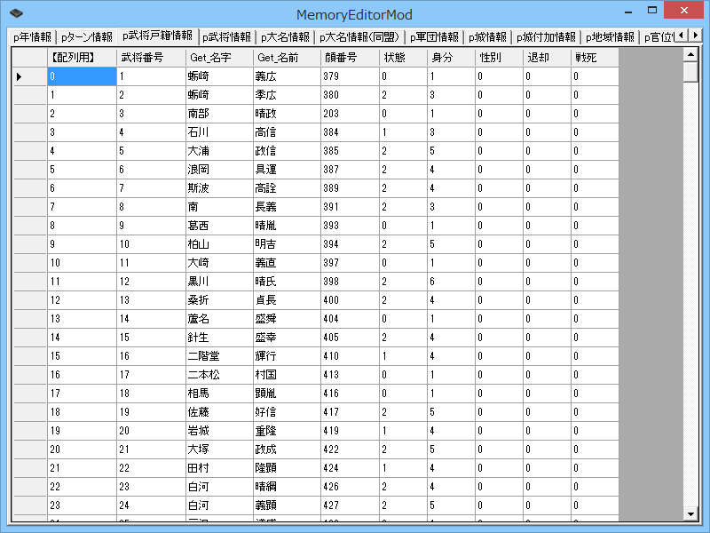

%(hilight)s
<div class="content-box mb-3 content-lighten">
	<h2><i class="fa fa-book fa-fw"></i>メモリエディタを上手く使えば理解が早まる</h2>
	<p><a href="?page=nobu_mod_the_memod">MemoryEditorMod</a> は「ScenarioModのデータ構造」に類似したタブ構成やカラム名となっているため、ScenarioModの理解の促進に役立ちます。<br>
		また、情報の取得や変更が可能です。「データを書き換えてみるとどうなるか？」といった軽いトライ＆エラーやデバッグにも役立ちます。</p>
	<p></p>
</div>

